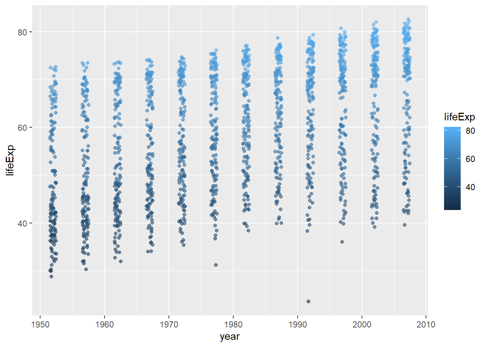
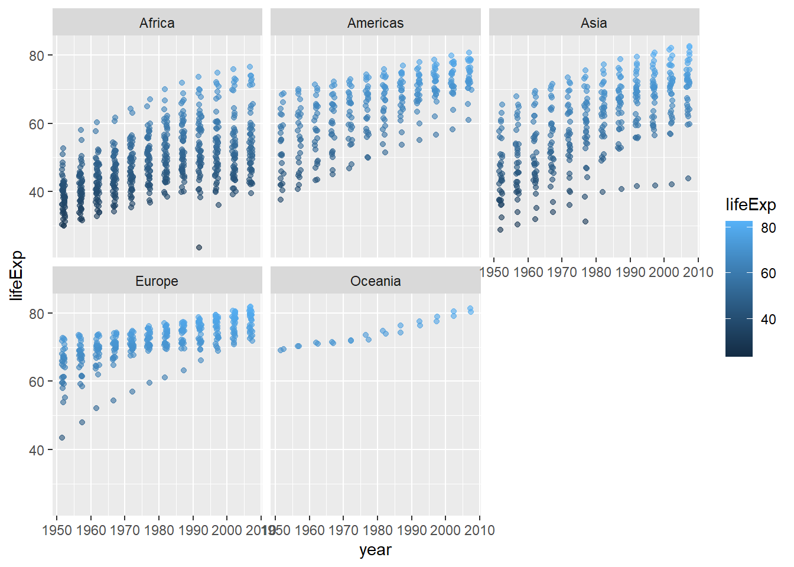

At the beginning of this course we introduced R by highlighting one of its main attractions: reproducibility. And here we are at the end of the course still banging on about reproducibility, but that’s because it is so important.
There is a growing awareness of the importance of reproducibility in data processing and analysis, and thankfully the tools needed to generate reproducible outputs are more accessible than ever before, helping to make this easier to accomplish.
There are many ways in which you can ensure your work is reproducible. The first we would recommend, is to start using R, and the second is to become familiar with R Markdown, so you are well on your way!
Here is a reminder of some of the main points to bear in mind, to ensure your future self and others can easily and efficiently build on the analysis you have carried out in R:
always create an RStudio Project to work in
use raw data directly in R (no pre-editing with other software)
include informative commenting
ensure code is easy to read with appropriate indentations and spacing
pipe %>% with the Tidyverse
give your objects meaningful names
work in R Markdown for reporting
Let’s look at these aspects in little more detail.
By now you should be familiar with the how and the why of creating Projects in RStudio as this has cropped up frequently throughout the course. Projects help to keep everything in one place, they help R to find all your files and folders easily, and they generally make your life a lot easier so you should definitely be using them.
Always use the raw data. If your data has come from a database or from a publicly updated data source, avoid the temptation of doing some quick and dirty data wrangling in Excel before importing into R. This would make your analysis less reproducible as you may not always remember exactly what steps you took during this initial phase and these steps would then need to be taken each time you wanted to repeat or carry out a similar operation.
Code which is easy to decipher and understand can be revisited in the future and rerun more easily, but how many times have you looked back at scribbled notes you took in haste, or code you typed quickly, with no recollection of what it all means? By including informative commenting you can help your future self, or anyone else who might be looking at your code, understand what it is you were trying to do at each point in your script. It isn’t needed for all lines of code but should be used when there might be ambiguity, or to provide clarification, or remind yourself about something specific to do with what’s happening. The keyboard shortcut for commenting/uncommenting a line is Ctrl+Shift+C, or you can manually type # .
easyread.svg
On a similar theme, it is important to make your code easy to read by applying the appropriate indentations and spacing. The keyboard shortcut for quickly reformatting your code is Ctrl+I (first select your code, or use Ctrl+A to select all before doing Ctrl+I). If your script is long this is particularly important as it means you, or someone else, can scan the document more easily to find the relevant text or information.
The Tidyverse has featured heavily in this course and is another great way to make your code easier to read and understand due to the use of the %>% operator. As we learned at the beginning of the course, the %>% reduces the need for nested functions, where each function is “nested” inside another making it potentially very difficult to debug. Instead the piped ( %>% ) functions appear almost like a series of statements or instructions, which can be run line by line if needed. At the start of every R script or document, remember to include library(tidyverse) .
To finish, just a final note about assigning your objects meaningful names. This is easily overlooked and can be surprisingly difficult but when given careful consideration, good object naming can make your life a lot easier, and again, make the code easier to understand and read. Avoid generic names such as data or plot as these can cause problems. This is particularly true if you are carrying out multiple analyses and have referred to “data” or “plot” somewhere else and not cleared your environment (Restart R often!). Also, when choosing names, no spaces or funky characters, stick to lowercase with underscores. Then be consistent, and you should be safe!
R Markdown is one of the keys to producing reproducible analysis in R as it enables the code and the narrative to be easily combined, whilst providing great flexibility as to how the output might be displayed. It is certainly worth the effort becoming familiar with R Markdown which was covered in detail in Week 6: Topics 1 & 2. Creating a new R Markdown document is as simple as going to File - New File - R Markdown - OK then delete everything up to the first code chunk (it is useful to leave the first setup chunk) and you are ready to go!
Reporting with R Markdown
R Markdown is not only a powerful tool for ensuring reproducibility, but as you have already discovered, it includes many features which make it easy to create and share clear and professional looking documents for a wide range of audiences.
Here are some things to remember when planning and designing a report with R Markdown:
provide a clear structure using Markdown section headers (#, ##, ###)
be conscious of the YAML, unlike R code, the YAML is very sensitive of extra spaces/formatting
consider the code output options depending on audience (`echo = TRUE` vs `echo = FALSE`)
think about the story you are trying to tell
make good use of figures
use tables appropriately
It is important to provide a clear structure in any report or document you are writing and R Markdown makes it easy to manage and display the structure through the use of headers. The hash symbol ( # ) is used in the Markdown sections (all the bits which aren’t code chunks or YAML) to indicate different levels of header, so how big or small the text should be. These headers also show up in the document outline which is extremely useful as a means of navigating your document when editing, helping to save you time.
# global chunk options`knitr::opts_chunk$set(echo =TRUE)# load packageslibrary(tidyverse)
── Attaching core tidyverse packages ──────────────────────── tidyverse 2.0.0 ──
✔ dplyr 1.1.4 ✔ readr 2.1.5
✔ forcats 1.0.0 ✔ stringr 1.5.1
✔ ggplot2 3.5.1 ✔ tibble 3.2.1
✔ lubridate 1.9.3 ✔ tidyr 1.3.1
✔ purrr 1.0.2
── Conflicts ────────────────────────────────────────── tidyverse_conflicts() ──
✖ dplyr::filter() masks stats::filter()
✖ dplyr::lag() masks stats::lag()
ℹ Use the conflicted package (<http://conflicted.r-lib.org/>) to force all conflicts to become errors
library(lubridate)library(here)
Warning: package 'here' was built under R version 4.4.3
here() starts at C:/Users/ldababn/OneDrive - University of Edinburgh/job/GitHub/website-ug-data-science
The structure of your R code chunks is important too. For example, it is good practice to have a code chunk near the top of your document (often in the setup chunk) where you keep all the packages that you are using together. It might look something like the image on the right. The next code chunk is often where you might choose to load your data and is likely to include the code similar to: mydata <- read_csv(here(“data”, “appointments.csv”))
We’ve already mentioned that Markdown headers ( # ) make it easy to define a clear structure in your R Markdown document. Explore some of the other Markdown features, such as **bold** and *italic* or `inline R code`, which can help to give your final document a high quality finish. Remember, you can access the Markdown Quick Reference guide from the Help menu.
In its most basic form, the YAML which appears at the top of your R Markdown document, could simply tell R Markdown what output format you would like your document to be in, in which case it would look like this, indicating HTML output:
---
output: html_document
---
However, you have the potential to add many attractive features via the YAML, such as table of contents, section numbering, themes, and much more. You have to be particularly careful about indentation in the YAML (unlike in R code chunks where indentation is mainly for readability) but you can start exploring YAML options easily through changing settings in the document cog and this will automatically update your YAML.
Depending on who your intended audience is, you have a number of output options available to you. You can choose whether or not to show or run your code in the final document. Showing you code in the Markdown output document (HTML, Word, PDF) is denoted `echo = TRUE`, not showing it is denoted `echo = FALSE`. You also have control over whether to display the output of each code chunk or not too. These options can be accessed from the individual code chunk cogs or can be set for the whole document in the setup chunk.
When creating a report or document, think about what story you are trying to tell with the data; you might be answering a specific question or perhaps highlighting a change in activity over a period of time. R Markdown makes it easy to intersperse clear and informative visual elements throughout the narrative. These could be in the form of figures and plots, nicely formatted tables or even images (e.g. JPG or PNG).
When writing the code to produce a plot, remember you don’t need to assign it to an object. For example, running myplot <- mydata %>% ggplot() will result in no plot appearing in your final document, it is saved in the Environment. Instead you can simply write mydata %>% ggplot() which will ensure your plot does appear. You can also control the size of your plots and figures in the code chunk settings cog.
When writing the code for a table which you want to include in your final document, remember that the function kable() in the knitr package helps provide consistent table formatting across various different outputs. Also note that the same principles apply concerning whether or not your table output will appear as those referred to in plotting; no need to save the table first, you can simply write mydata %>% kable() .
And finally, as addictive as it is creating beautiful plots with ggplot2, try not to bombard the reader with too many tables and figures. Choose wisely the information you would like to display in order to tell your story concisely and make good use of ggplot2’s ability to provide a breadth of information in one plot, through careful use of aesthetic mappings.
Function recap
In this course we have covered a whole variety of functions which you will find useful when carrying out data wrangling, plotting and analysis in R. There are however some functions which you will find yourself using more frequently than others and in the following sections we provide a quick recap on some of these more common functions.
The examples below are intended as a quick reference guide to remind yourself which functions to use in which settings. They can be copied and pasted straight into an R Markdown document as code chunk to test, but if you are copying multiple code chunks, you only need to include the packages once.
Note: The examples below all use the gapminder dataset which is loaded by running the command library(gapminder) . In your own projects you would load your data with the command read_csv(“mydata.csv”) or similar, depending on the format and location of your data.
distinct()
distinct() returns only distinct (unique) rows in a data frame
In the example below we have included the variable continent so that we can explore how many unique categories there are in this column.
library(tidyverse)library(gapminder)
Warning: package 'gapminder' was built under R version 4.4.3
gapminder %>%distinct(continent)
# A tibble: 5 × 1
continent
<fct>
1 Asia
2 Europe
3 Africa
4 Americas
5 Oceania
Useful for:
exploring categories
spotting spelling mistakes
looking at date ranges
removing duplicate rows
Try this out:
gapminder %>%
count(contintent)
filter() returns a subset of rows based on a condition
In the example below we have specified that we only want to see results where country is equal to Ghana .
# A tibble: 1,704 × 7
country continent year lifeExp pop gdpPercap pop_millions
<fct> <fct> <int> <dbl> <int> <dbl> <dbl>
1 Afghanistan Asia 1952 28.8 8425333 779. 8.43
2 Afghanistan Asia 1957 30.3 9240934 821. 9.24
3 Afghanistan Asia 1962 32.0 10267083 853. 10.3
4 Afghanistan Asia 1967 34.0 11537966 836. 11.5
5 Afghanistan Asia 1972 36.1 13079460 740. 13.1
6 Afghanistan Asia 1977 38.4 14880372 786. 14.9
7 Afghanistan Asia 1982 39.9 12881816 978. 12.9
8 Afghanistan Asia 1987 40.8 13867957 852. 13.9
9 Afghanistan Asia 1992 41.7 16317921 649. 16.3
10 Afghanistan Asia 1997 41.8 22227415 635. 22.2
# ℹ 1,694 more rows
Useful for:
adding an extra column containing a calculation
combining with group_by() for grouped calculations
updating a column which has mistakes
converting a column to a different data type
Remember:
your new column is always added at the end of your tibble (data frame)
the value to the left of the = is the new name for you column and could be called anything
if you want to replace a column, the value to the left of the = must be exactly the same name as the column to replace
summarise()
summarise() returns a new tibble (data frame) containing summary statistics based on what has been specified in the function.
In the example below the summarise function has calculated the average life expectancy for the whole gapminder dataset by averaging all observations (or rows). On its own, summarise() is not so useful, but when combined with group_by() its use becomes apparent, see later examples.
combining with group_by() to perform grouped calculations
group_by()
group_by() lets you choose how you want the variables in your dataset to be grouped so that you can perform operations (such as sum() or mean()) on these groups.
In the example below we have grouped our data by the variable year. Notice that the output to this chunk of code looks no different to how it would look if we just ran gapminderwithout any grouping. This is because the effects of group_by() are only noticeable when we start performing operations.
# A tibble: 1,704 × 6
# Groups: year [12]
country continent year lifeExp pop gdpPercap
<fct> <fct> <int> <dbl> <int> <dbl>
1 Afghanistan Asia 1952 28.8 8425333 779.
2 Afghanistan Asia 1957 30.3 9240934 821.
3 Afghanistan Asia 1962 32.0 10267083 853.
4 Afghanistan Asia 1967 34.0 11537966 836.
5 Afghanistan Asia 1972 36.1 13079460 740.
6 Afghanistan Asia 1977 38.4 14880372 786.
7 Afghanistan Asia 1982 39.9 12881816 978.
8 Afghanistan Asia 1987 40.8 13867957 852.
9 Afghanistan Asia 1992 41.7 16317921 649.
10 Afghanistan Asia 1997 41.8 22227415 635.
# ℹ 1,694 more rows
In this next example we have combined group_by() with the summarise() command and now, instead of seeing an average life expectancy for the whole tibble (as in the example above), we see that life expectancy has been averaged within each year group.
combining with summarise()or mutate() for grouped calculations
preparing summary statistics for plotting
exploring values within groups in your data
Remember:
to use ungroup() if carrying out further data manipulations to avoid unexpected results, as by default, mutate() and summarise() silently retain the groupings.
the value to the left of the = is the new name for your column and could be called anything
left_join() allows you to combine two datasets
In the example below we are joining the gapminder tibble to another tibble we can access directly from the gapminder package, the country_codes data frame, in order to add the ISO country codes.
# A tibble: 1,704 × 8
country continent year lifeExp pop gdpPercap iso_alpha iso_num
<chr> <fct> <int> <dbl> <int> <dbl> <chr> <int>
1 Afghanistan Asia 1952 28.8 8425333 779. AFG 4
2 Afghanistan Asia 1957 30.3 9240934 821. AFG 4
3 Afghanistan Asia 1962 32.0 10267083 853. AFG 4
4 Afghanistan Asia 1967 34.0 11537966 836. AFG 4
5 Afghanistan Asia 1972 36.1 13079460 740. AFG 4
6 Afghanistan Asia 1977 38.4 14880372 786. AFG 4
7 Afghanistan Asia 1982 39.9 12881816 978. AFG 4
8 Afghanistan Asia 1987 40.8 13867957 852. AFG 4
9 Afghanistan Asia 1992 41.7 16317921 649. AFG 4
10 Afghanistan Asia 1997 41.8 22227415 635. AFG 4
# ℹ 1,694 more rows
Useful for:
combining two sets of data which share an id (e.g. patient id, appointment id)
adding in information from a lookup table (e.g. country codes, Health Board names)
Remember:
to watch out what happens to missing values
to keep an eye on the number of observations in each tibble before and after joining
to check which columns are being joined by
Other functions for wrangling data and what they might be useful for:
arrange() for sorting the values within a column
desc() for indicating descending sort order when used within arrange()
str_replace() for updating spelling mistakes in a column
paste() for joining things together and adding new text
ymd() for reading in dates in strange formats
factor() for converting a variable to factor data type
fct_relevel() for changing the order of factors
pivot_longer() for reshaping your data if you have values in column headings
pivot_wider() for reshaping your data if you have multiple variables in one column
Plotting and tables recap
In the examples below we provide a recap on how to use ggplot2 to build up layers on a plot. Included are examples of argument options which you might want to experiment with in your own plots. I rarely remember any of the argument specifics and always fine-tune my plots by pressing `F1` on the various functions I’m using and exploring the documentation (F1, or fn+F1 on some computers opens up the Help tab). Then it’s a process of trial and error.
Comments are included before each new line or layer to describe what is happening.
The blank canvas
library(tidyverse)library(gapminder)# Data we are sending to ggplot()gapminder %>%# lets create a plotggplot(aes( # specify the axesx = year,y = lifeExp))
Remember:
that everything from now on needs + at end of line instead of %>%
Plot type
library(tidyverse)library(gapminder)gapminder %>%ggplot(aes(x = year, y = lifeExp)) +# specify type of plot: scatter with jittergeom_jitter(# colour life expectancy based on valuesaes(colour = lifeExp),# set "alpha" making points same transparencyalpha =0.6,# specify width of "jitter"width =0.5)

Remember:
colour is specified inside the aes() function because we want it to be dependent on the values in the data
alpha and width are specified outside the aes() function because we want to specify a fixed value for these arguments
Faceting
library(tidyverse)library(gapminder)gapminder %>%ggplot(aes(x = year, y = lifeExp)) +geom_jitter(aes(colour = lifeExp),alpha =0.6,width =0.5) +# create muti-panle plotfacet_wrap(# based on continent grouping~ continent)

Useful for:
comparing values between different categories in your dataset
Including a second geom, e.g., geom_boxplot()
library(tidyverse)library(gapminder)gapminder %>%ggplot(aes(x = year, y = lifeExp)) +geom_jitter(aes(colour = lifeExp),alpha =0.6,width =0.5) +facet_wrap(~ continent) +# specify type of plot: boxplotgeom_boxplot(# group by year (discrete) as currently "int" data type (continuous)aes(group = year),# set "alpha" so we can see jitter points underneathalpha =0.3,# remove boxplot outliers as already present in "jitter" layeroutlier.shape =NA)
Remember:
Depending on whether your variable is stored as a “number” or a “character” or a “factor” will determine how ggplot2 deals with it
Standard themes
library(tidyverse)library(gapminder)gapminder %>%ggplot(aes(x = year, y = lifeExp)) +geom_jitter(aes(colour = lifeExp),alpha =0.6,width =0.5) +facet_wrap(~ continent) +geom_boxplot(aes(group = year),alpha =0.3,outlier.shape =NA) +# choose a standard theme: darktheme_dark()
Useful for:
quickly changing how your plot looks by applying one of the built in themes: theme_bw() , theme_classic() , theme_dark() etc.
Making Tables
Tables are another important tool to have in your data analysis toolbox for communcating. As a general rule, when deciding between tables for graphs/plots:
use tables when the display will be used to look up individual values or you want to compare individual values
use graphs when the display will be used to reveal relatonships among whole sets of values or between variables
To make tables, we worked with the kable function and kableExtra package in R.
The general gt workflow includes 3 key steps:
wrangle your data for the table by either piping %>% the data or creating a new data object (tabledata <- data %>% mutate(...))
pass the wrangled data to the kable function %>% kable()
format the table object for presentation
Step 1: Wrangle data for the table
Lets say we are interested in average life expectancy in Africa, Asia, and Oceania in the years 1952, 1972, 1992, and 2002
`summarise()` has grouped output by 'year'. You can override using the
`.groups` argument.
Step 2: Create the kable table object
tabledata %>%kable()
year
continent
avg_life_exp
1952
Africa
39.13550
1952
Asia
46.31439
1952
Oceania
69.25500
1972
Africa
47.45094
1972
Asia
57.31927
1972
Oceania
71.91000
1992
Africa
53.62958
1992
Asia
66.53721
1992
Oceania
76.94500
2002
Africa
53.32523
2002
Asia
69.23388
2002
Oceania
79.74000
Step 3: Format the table for presentation
How you decide to format and customise your table visually is a stylistic and personal choice. However, there are a few key principles to keep in mind:
you should always change the name of your variables to be meaingful to stakeholders who are not familiar with your data - that is, do not keep column names the same as they are called in your dataset
generally, it is a good idea to have a title on each table
for reproducibility, it is a good idea to include the data source if you are using an openly available dataset
be consistent: use capital or lower case letters in a consistent way
format numbers in an interpretable way (generally speaking, you do not need to include more than 2 or 3 decimal places)
Below is one way you could format the table for presentation:
tabledata %>%kable(col.names =c("Year", "Continent", "Average Life Expectancy"),align ="clc",digits =2,caption ="Life Expectancy in Africa, Asia, and Oceania: Data from 1952, 1972, 1992, and 2002") %>%kable_styling("striped", full_width =FALSE) %>%footnote(general ="Data from the gapminder dataset")
Life Expectancy in Africa, Asia, and Oceania: Data from 1952, 1972, 1992, and 2002
Year
Continent
Average Life Expectancy
1952
Africa
39.14
1952
Asia
46.31
1952
Oceania
69.25
1972
Africa
47.45
1972
Asia
57.32
1972
Oceania
71.91
1992
Africa
53.63
1992
Asia
66.54
1992
Oceania
76.94
2002
Africa
53.33
2002
Asia
69.23
2002
Oceania
79.74
Note:
Data from the gapminder dataset
Combined Example
In the example below you can see a simple R Markdown document without any narrative text added yet, just the YAML then a series of code chunks outlining the various stages in the data analysis process.
CODE OF COMBINED_EXAMPLE.RMD IS HERE! PDF is here
Which when knitted to a pdf document looks like this:
library(downloadthis)
Warning: package 'downloadthis' was built under R version 4.4.3
download_link(link ="/documents/week-4/Combined-Example-W4.3.pdf", # Path to your PDF filebutton_label ="Download the census report (PDF)",button_type ="primary", # You can change the color style (e.g., "primary", "success", "info")has_icon =TRUE,icon ="fa fa-file-pdf", # Font Awesome icon for PDFself_contained =FALSE)
The next step would be to add in narrative text, creating a comprehensive analysis.
Optional: Data Engagement & Data Controversies
Critically review the arguments posed in this article: